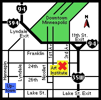

|
Directions to the Institute
5k
The Minneapolis Institute of Arts is located at 2400 Third Avenue
South, one mile south of downtown Minneapolis.
Coming from the Northeast on 35W:
Take 94 West to the Lyndale exit. Go south on Lyndale to 24th Street.
Turn left on 24th and go to Third Avenue South. Turn right on Third
Avenue and go to 25th Street; the parking ramp is on the right, and
the Institute is located just north of the ramp.
Coming from the West on I-394:
Take the Hennepin/Lyndale exit off I-394. Go south on Lyndale to 24th
Street. Turn left on 24th Street and go to Third Avenue South. Turn
right on Third Avenue and go to 25th Street; the parking ramp is on
the right, and the Institute is located just north of the ramp.
Coming from the East on I-94:
Take the 11th Street exit and curve left to Third Avenue South. Turn
left on Third Avenue and go to 25th Street; the parking ramp is on the
right, and the Institute is located just north of the ramp.
Coming from the South on 35W:
Take the 31st Street exit off 35W. Turn left on 31st and go to First
Avenue South. Turn right on First Avenue South and go to Cecil Newman
Lane. Turn left on Cecil Newman Lane and go to Nicollet Avenue. Turn
right on Nicollet Avenue and go to 24th Street. Turn right on 24th Street
and go to Third Avenue South. Turn right on Third Avenue South and go
to 25th Street; the parking ramp is on the right, and the Institute
is located just north of the ramp.
Special needs:
The Institute is barrier-free and accessible to visitors with special
needs. Wheelchairs are available inside the main entrance to the museum.
There is reserved parking for handicapped visitors in the museum’s
parking ramp, south of the Third Avenue entrance.
For more information, please call the Visitor Information Center at (612)
870-3131, TTD (612)-870-3132 or toll-free (888) MIA-ARTS (642-2787) (2787).
Main Menu ~ General
Information
|